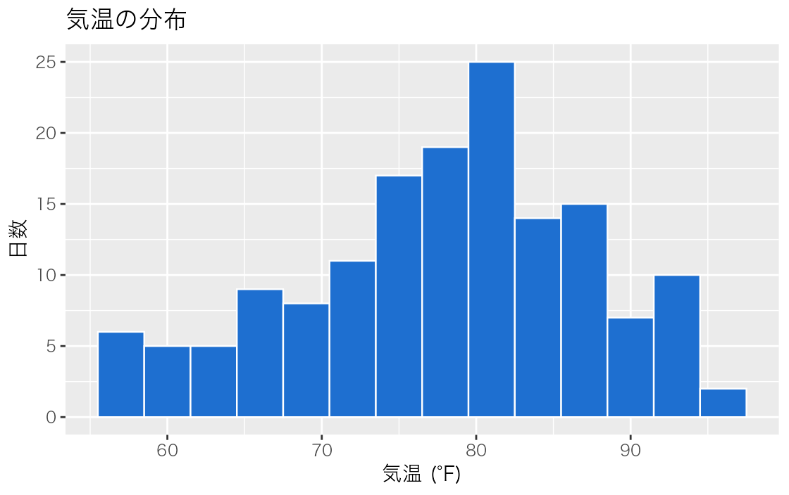
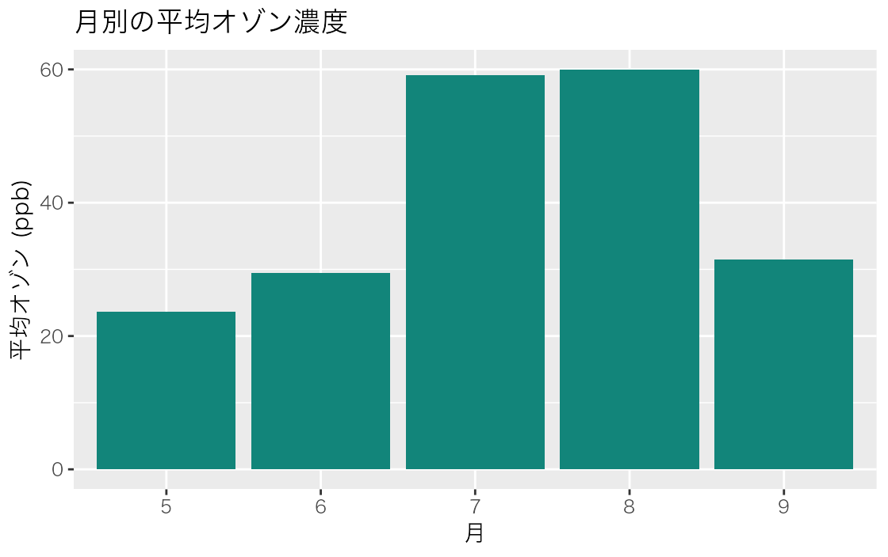
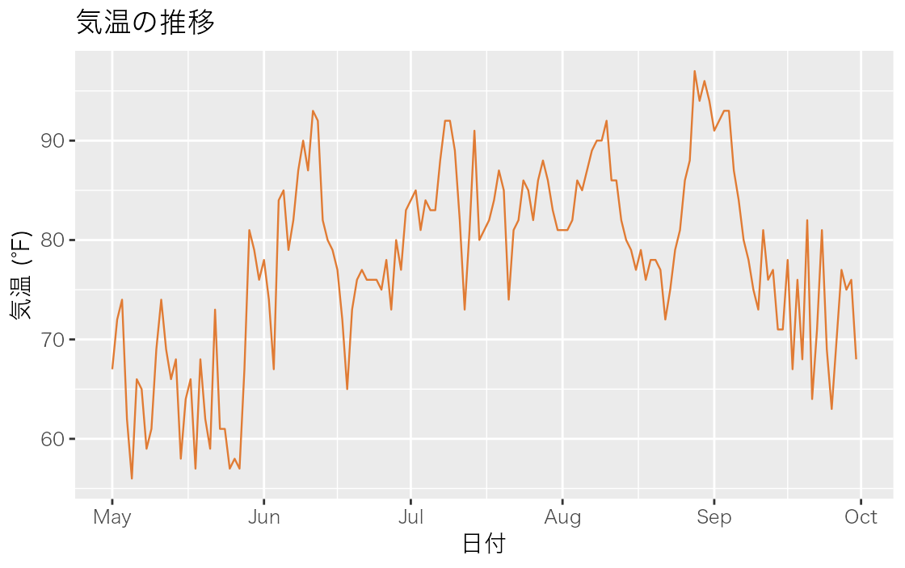
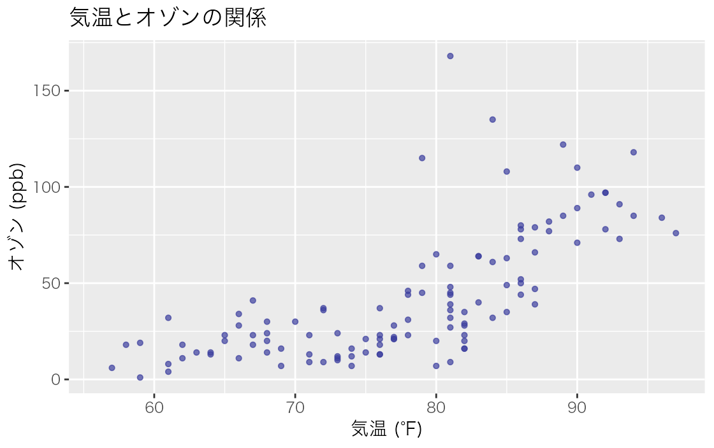
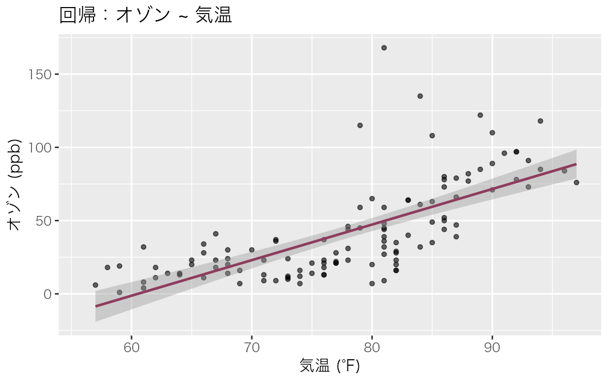
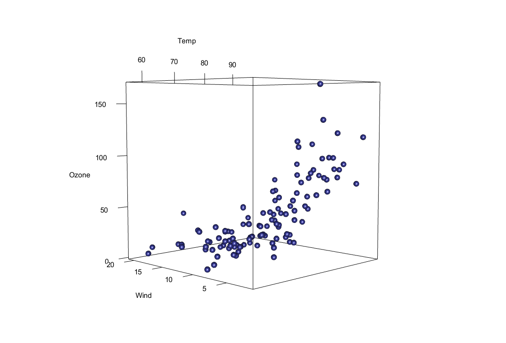
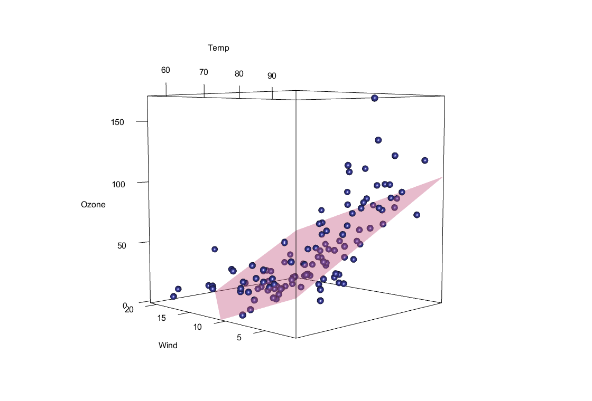

別紙 · 可視化サンプル
RStudio 導入の別紙です。base R 同梱の airquality(1973年NYの大気観測)を使い、ggplot2 でヒストグラム・棒・折れ線・散布図・回帰線を、rgl で3次元散布図を描きます。新規スクリプト(⇧⌘N / Ctrl+Shift+N)に貼り、各行で ⌘⏎ / Ctrl+Enter を押すと右下の Plots ペインに図が出ます。各コードの下には実際に実行したときの出力(図・コンソール)を載せているので、手元の結果と見比べてください。まず下準備を実行してから各図を試します。
airquality に日付列を足しておく(折れ線グラフ用)。最後の head(aq) で中身を確認
library(ggplot2)
library(dplyr)
# airquality：1973年NYの大気観測（base R 同梱）
data(airquality)
aq <- airquality %>%
mutate(Date = as.Date(paste(1973, Month, Day, sep = "-")))
head(aq) # 先頭6行を確認Ozone Solar.R Wind Temp Month Day Date 1 41 190 7.4 67 5 1 1973-05-01 2 36 118 8.0 72 5 2 1973-05-02 3 12 149 12.6 74 5 3 1973-05-03 4 18 313 11.5 62 5 4 1973-05-04 5 NA NA 14.3 56 5 5 1973-05-05 6 28 NA 14.9 66 5 6 1973-05-06
1変数の分布。ここでは気温 Temp の頻度。
ggplot(aq, aes(x = Temp)) +
geom_histogram(binwidth = 3, fill = "#1E6FD0", color = "white") +
labs(title = "気温の分布", x = "気温 (°F)", y = "日数")
カテゴリ別の集計値。月別の平均オゾン濃度。
aq %>%
group_by(Month) %>%
summarise(Ozone_mean = mean(Ozone, na.rm = TRUE)) %>%
ggplot(aes(x = factor(Month), y = Ozone_mean)) +
geom_col(fill = "#12857A") +
labs(title = "月別の平均オゾン濃度", x = "月", y = "平均オゾン (ppb)")
時系列などの連続的な推移。日付ごとの気温。
ggplot(aq, aes(x = Date, y = Temp)) +
geom_line(color = "#E07B34") +
labs(title = "気温の推移", x = "日付", y = "気温 (°F)")
2変数の関係。気温とオゾン濃度。
ggplot(aq, aes(x = Temp, y = Ozone)) +
geom_point(color = "#3B3E9E", alpha = 0.7) +
labs(title = "気温とオゾンの関係", x = "気温 (°F)", y = "オゾン (ppb)")
Warning message:
Removed 37 rows containing missing values or values outside the scale
range (`geom_point()`).関係に直線をあてる。geom_smooth(method="lm")。
ggplot(aq, aes(x = Temp, y = Ozone)) +
geom_point(alpha = 0.6) +
geom_smooth(method = "lm", se = TRUE, color = "#8E3B5E") +
labs(title = "回帰：オゾン ~ 気温", x = "気温 (°F)", y = "オゾン (ppb)")
# 回帰係数・決定係数の確認
model <- lm(Ozone ~ Temp, data = aq)
summary(model)Call:
lm(formula = Ozone ~ Temp, data = aq)
Residuals:
Min 1Q Median 3Q Max
-40.729 -17.409 -0.587 11.306 118.271
Coefficients:
Estimate Std. Error t value Pr(>|t|)
(Intercept) -146.9955 18.2872 -8.038 9.37e-13 ***
Temp 2.4287 0.2331 10.418 < 2e-16 ***
---
Signif. codes: 0 '***' 0.001 '**' 0.01 '*' 0.05 '.' 0.1 ' ' 1
Residual standard error: 23.71 on 114 degrees of freedom
(37 observations deleted due to missingness)
Multiple R-squared: 0.4877, Adjusted R-squared: 0.4832
F-statistic: 108.5 on 1 and 114 DF, p-value: < 2.2e-163変数の関係を立体で。気温 × 風速 × オゾン。マウスで回せる対話的3D。
# 初回のみ（インストール）
install.packages("rgl")
library(rgl)
# 3次元散布図：x=気温, y=風速, z=オゾン
plot3d(aq$Temp, aq$Wind, aq$Ozone,
type = "s", size = 1, col = "#3B3E9E",
xlab = "Temp", ylab = "Wind", zlab = "Ozone")
# 重回帰 Ozone ~ Temp + Wind の回帰平面を重ねる
model3d <- lm(Ozone ~ Temp + Wind, data = aq)
cf <- coef(model3d)
planes3d(cf["Temp"], cf["Wind"], -1, cf["(Intercept)"],
alpha = 0.4, col = "#C2557F")
summary(model3d)
Call:
lm(formula = Ozone ~ Temp + Wind, data = aq)
Residuals:
Min 1Q Median 3Q Max
-41.251 -13.695 -2.856 11.390 100.367
Coefficients:
Estimate Std. Error t value Pr(>|t|)
(Intercept) -71.0332 23.5780 -3.013 0.0032 **
Temp 1.8402 0.2500 7.362 3.15e-11 ***
Wind -3.0555 0.6633 -4.607 1.08e-05 ***
---
Signif. codes: 0 '***' 0.001 '**' 0.01 '*' 0.05 '.' 0.1 ' ' 1
Residual standard error: 21.85 on 113 degrees of freedom
(37 observations deleted due to missingness)
Multiple R-squared: 0.5687, Adjusted R-squared: 0.5611
F-statistic: 74.5 on 2 and 113 DF, p-value: < 2.2e-16全体を1つのスクリプトに。新規 .R ファイルに貼って保存すれば再利用できる
# ── パッケージ（初回のみ install.packages("tidyverse")）
library(ggplot2)
library(dplyr)
# ── データ：airquality（1973年NYの大気観測・base R 同梱）
data(airquality)
aq <- airquality %>%
mutate(Date = as.Date(paste(1973, Month, Day, sep = "-")))
# 1. ヒストグラム
ggplot(aq, aes(Temp)) +
geom_histogram(binwidth = 3, fill = "#1E6FD0", color = "white") +
labs(title = "気温の分布", x = "気温 (°F)", y = "日数")
# 2. 棒グラフ
aq %>% group_by(Month) %>%
summarise(Ozone_mean = mean(Ozone, na.rm = TRUE)) %>%
ggplot(aes(factor(Month), Ozone_mean)) +
geom_col(fill = "#12857A") +
labs(title = "月別の平均オゾン濃度", x = "月", y = "平均オゾン (ppb)")
# 3. 折れ線グラフ
ggplot(aq, aes(Date, Temp)) +
geom_line(color = "#E07B34") +
labs(title = "気温の推移", x = "日付", y = "気温 (°F)")
# 4. 散布図
ggplot(aq, aes(Temp, Ozone)) +
geom_point(color = "#3B3E9E", alpha = 0.7) +
labs(title = "気温とオゾンの関係", x = "気温 (°F)", y = "オゾン (ppb)")
# 5. 散布図 + 回帰直線
ggplot(aq, aes(Temp, Ozone)) +
geom_point(alpha = 0.6) +
geom_smooth(method = "lm", se = TRUE, color = "#8E3B5E") +
labs(title = "回帰：オゾン ~ 気温", x = "気温 (°F)", y = "オゾン (ppb)")
summary(lm(Ozone ~ Temp, data = aq))
# 6. 3次元散布図（rgl・初回のみ install.packages("rgl")）
library(rgl)
plot3d(aq$Temp, aq$Wind, aq$Ozone,
type = "s", size = 1, col = "#3B3E9E",
xlab = "Temp", ylab = "Wind", zlab = "Ozone")
model3d <- lm(Ozone ~ Temp + Wind, data = aq)
cf <- coef(model3d)
planes3d(cf["Temp"], cf["Wind"], -1, cf["(Intercept)"],
alpha = 0.4, col = "#C2557F")
summary(model3d)可視化を自分のデータに置き換えるときは、aq を自分のデータフレームに、aes() の列名を自分の変数名に替えるだけで流用できます。RStudio 導入へ戻る。